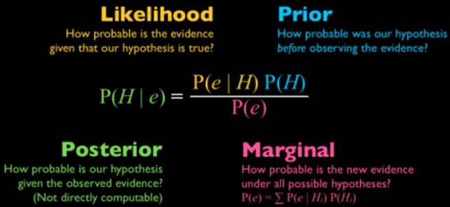
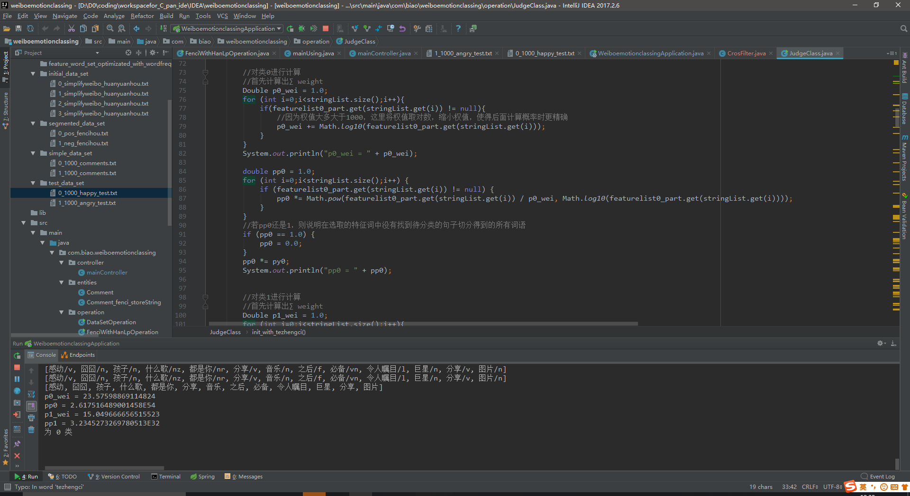

简介
本次毕设只在构造一个具有高效实用的情感分类系统。本分类系统通过对微博评论文本进行预处理，通过朴素贝叶斯算法，对微博评论文本进行训练，生成模型，最终实现对微博评论文本倾向性进行预测。

贝叶斯分类器
贝叶斯分类器是各种分类器中分类错误概率最小或者在预先给定代价的情况下平均风险最小的分类器。它的设计方法是一种最基本的统计分类方法。其分类原理是通过某对象的先验概率，利用贝叶斯公式计算出其后验概率，即该对象属于某一类的概率，选择具有最大后验概率的类作为该对象所属的类。

分词演示
本系统提供了在线分词、分类演示功能，用户可以直接在线输入文本进行分词、分类操作！